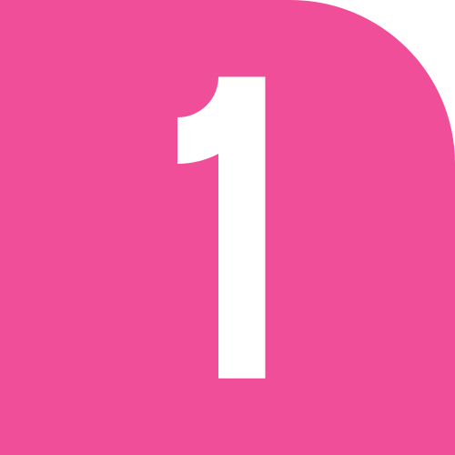
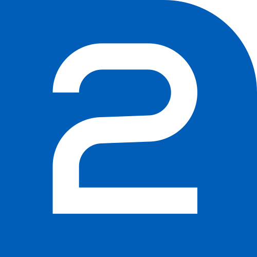
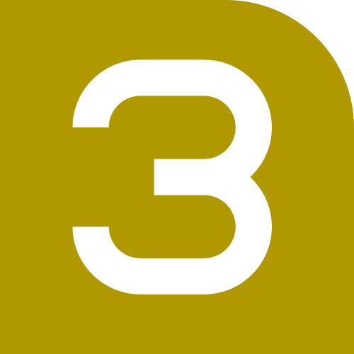

Historia de las Primeras Líneas
Línea : Inaugurada en 1969, conecta Observatorio con Pantitlán. Fue la primera línea del sistema.
Línea : Abierta en 1970, va de Cuatro Caminos a Tasqueña. A inicios de los 2000, introdujo trenes con mayor capacidad.
Línea : Comenzó en 1970, conecta Indios Verdes con Universidad. Es una de las más largas y transitadas.